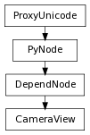

class counterpart of mel function cameraView
This command creates a preset view for a camera which is then independent of the camera. The view stores a camera’s eye point, center of interest point, up vector, tumble pivot, horizontal aperture, vertical aperature, focal length, orthographic width, and whether the camera is orthographic or perspective by default. Or you can only store 2D pan/zoom attributes by setting the bookmarkType to 1. These settings can be applied to any other camera through the set camera flag. This command can be used for creation or edit of camera view objects. This command can only be executed with one of the add bookmark, or remove bookmark and one of set camera, or the set view flags set.
Associate this view with the camera specified or the camera in the active model panel. This flag can be used for creation or edit.
Derived from mel command maya.cmds.cameraView
Derived from mel command maya.cmds.cameraView
Specify the camera to use. This flag should be used in conjunction with the add bookmark, remove bookmark, set camera, or set view flags. If this flag is not specified the camera in the active model panel will be used.
Derived from mel command maya.cmds.cameraView
Remove the association of this view with the camera specified or the camera in the active model panel. This can only be used with edit.
Derived from mel command maya.cmds.cameraView
Set this view into a camera specified by the camera flag or the camera in the active model panel. This flag can only be used with edit.
Derived from mel command maya.cmds.cameraView
Set the camera view to match a camera specified or the active model panel. This flag can only be used with edit.
Derived from mel command maya.cmds.cameraView